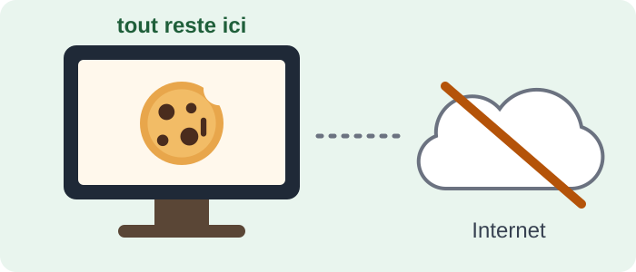

Vie privée
Pépite travaille sur l'ordinateur, sans Internet. Rien n'est envoyé.

Aucune connexion
- Pépite n'utilise pas le réseau : ni les mots tapés, ni les prénoms, ni des statistiques ne sont envoyés.
- Pas de mise à jour automatique, pas de publicité, pas de compte à créer.
- Les liens de la fenêtre À propos s'ouvrent dans votre navigateur seulement si vous cliquez dessus.
Ce que Pépite voit
Pour proposer des mots, Pépite suit la frappe et lit le texte autour du curseur. Il n'enregistre pas ce qui est écrit : il garde seulement les réglages, les profils et les mots ajoutés à la demande.
- Mots de passe : dans un champ de mot de passe, Pépite ne propose rien, ne lit rien et ne dit rien. Un champ qu'il ne peut pas vérifier reste silencieux.
- Consoles et bureaux à distance : Pépite n'y suit rien, n'y lit rien et n'y dit rien.
- Exception : le mode journal (--log), réservé aux tests, enregistre les mots tapés. Voir le mode journal.
Ce qui est gardé, et où
- %APPDATA%\Pepite-Prediction : les réglages, les profils (prénom, image, couleur) et les listes de mots, pour chaque compte Windows.
- %LOCALAPPDATA%\Pepite-Prediction\sauvegardes : une sauvegarde par jour des profils.
- Une leçon collée dans Pépite n'est pas gardée : seuls les mots cochés le sont.
Pour tout effacer : désinstallez Pépite et répondez oui à la question sur les données, ou supprimez ces dossiers.
Fichiers .pepite et images
- Un fichier « .pepite » exporté contient les prénoms des élèves : gardez-le sur un support de l'établissement.
- Pas de photo : un profil a un pictogramme, et une base de noms importée n'accepte que des pictogrammes ou des dessins.
Cette aide
Cette aide est faite de fichiers installés avec Pépite. Elle ne charge rien depuis Internet et ne dépose aucun cookie.
Un petit script, dans le même dossier, retient les deux cases d'affichage (Lettres OpenDyslexic, Texte plus grand) dans votre navigateur, sur cet ordinateur. Les adresses de sites sont écrites en texte : rien ne s'ouvre sans vous.